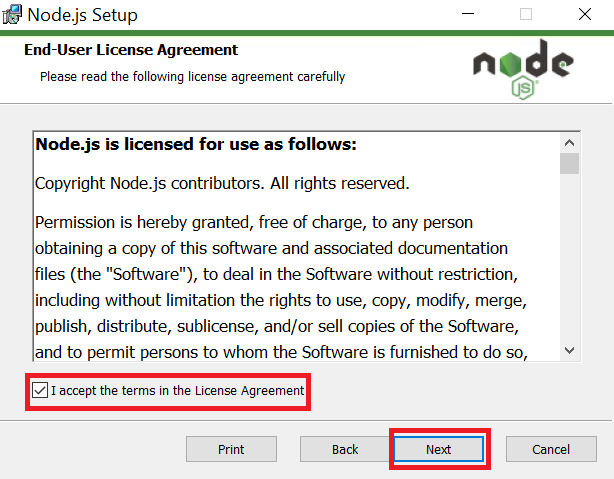
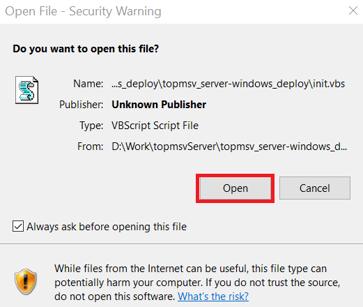

TopMSV Server Setup Guide
1. Install Node.js
- Go to the Node.js website
- Click download button to download the installation file.

- Double click the downloaded file "node-v14.17.0-x64.msi" and follow the instructions of the setup wizard to finish installation.




When asked "Do you want to allow this app to make changes to your device?", select "Yes".

2. Start TopMSV Server
- Double click "startServer.bat". A chrome browser will open when TopMSV Server is ready.

- If a pop-up below is displayed, click "Open."

- When finished using TopMSV Server, double click "stopServer.bat" to close TopMSV Server.